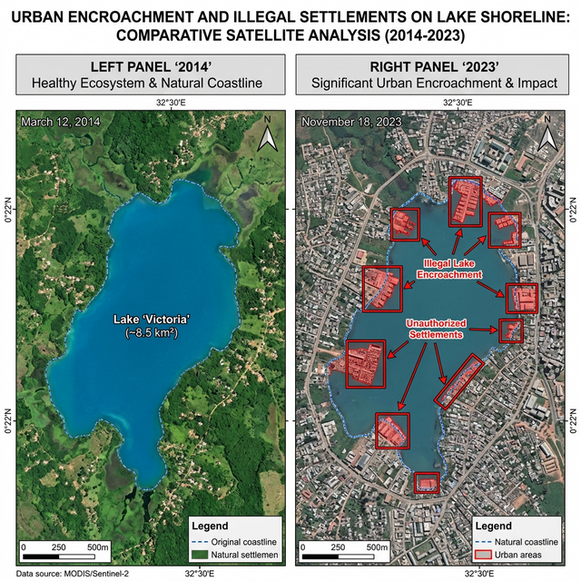

Protecting Our Water Bodies, One Encroachment at a Time
The Challenge: Illegal encroachments threaten our lakes and rivers. Water bodies face increasing pressure from unauthorized construction, dumping, and land grabbing. Our mission is to detect and prevent these encroachments in real-time using advanced AI and satellite imagery.
Real-time monitoring of protected water bodies in your region
Protected Water Bodies
Encroachment Detected
Resolved Cases
Visualizing a decade of encroachment at Puzhal Lake

Our temporal analysis shows a 24.7% reduction in the water spread area due to unauthorized construction. The red zones indicate areas where the Water-Guard AI has successfully flagged active encroachments for legal action.
Real numbers, Real change
Cutting-edge technology for water protection
Real-time AI-powered detection of encroachments using satellite imagery and computer vision.
Empower citizens to report unauthorized activities and encroachments with photo evidence.
Track trends, monitor progress, and analyze encroachment patterns with detailed reports.
Visualize protected water bodies and encroachment hotspots on interactive maps.
Instant notifications for detected encroachments and critical water body events.
Role-based access control for citizens, officers, and administrators.
Understanding the importance of preserving our water bodies
Lakes and rivers provide over 90% of freshwater used by humans. Protecting them ensures clean water for future generations.
Water bodies are home to diverse ecosystems. Encroachments destroy habitats and threaten biodiversity.
Rivers, lakes, and wetlands play a crucial role in regulating local climate and maintaining hydrological balance.
Fisheries, agriculture, and tourism depend on healthy water bodies. Encroachments threaten livelihoods.
Natural water bodies and floodplains reduce flood risk. Encroachments increase vulnerability to disasters.
Every citizen has a role to play. Together, we can protect our water bodies for current and future generations.
Be part of the solution. Report encroachments, monitor water bodies, and help protect our natural resources.